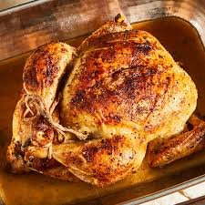

Juicy Roasted Chicken

This roasted chicken is perfectly seasoned and just like the way my grandmother used to make it. The method used in this recipe results in the juiciest chicken! We loved to nibble on the celery after it was cooked.
Roasted chicken never fails to impress, but it's surprisingly simple to make! This juicy roasted chicken recipe is perfect for beginner cooks and old pros alike.
How to Roast a Chicken
Roasting a whole chicken at home is easier than it seems. You'll find a detailed ingredient list and step-by-step instructions in the recipe below, but let's go over the basics:
Roasted Chicken Ingredients
These are the ingredients you'll need to make the juiciest roast chicken recipe of your life:
- Chicken:This recipe starts with a 3-pound whole chicken. If your bird is larger or smaller, you'll need to adjust the recipe.
- Seasonings: This roasted chicken is simply seasoned with salt, black pepper, and onion powder.
- Butter:Butter locks in moisture and gives the seasonings something to adhere to.
- Celery:Stuff the chicken cavity with celery for subtle vegetal flavor. Plus, the celery will release even more moisture as the chicken cooks.
How to Roast a Chicken Step-By-Step
Here's a very brief overview of what you can expect when you make homemade roasted chicken:
- Season the chicken inside and out.
- Add the butter to the chicken and the pan.
- Stuff the cavity with celery.
- Bake until the chicken is fully roasted.
How Long to Roast a Chicken
In an oven preheated to 350 degrees F, a 3-pound whole chicken should be completely cooked in a little more than an hour. You'll know it's done when the meat is no longer pink at the bone, the juices run clear, and an instant read thermometer inserted into the thickest part of the thigh (near the bone) reads 165 degrees F.
Roasted Chicken Tips
"Roasting a whole chicken at home requires almost no effort and very few ingredients," says culinary producer Nicole McLaughlin (a.k.a. NicoleMcMom). Here are a few of her favorite tips for perfect roasted chicken every time:
- The most important thing to know, according to Nicole: "Dry skin is crispy skin." Make sure you get the skin nice and dry with a paper towel before you season the chicken.
- "Don't forget to season the inside as well as the outside," says Nicole, who recommends also getting under the skin with butter for extra flavor.
- If you don't have a roasting pan, that's totally fine. Nicole prefers using a simple baking sheet with a rack on top.
- To prevent the wings from burning during the long roasting process, Nicole tucks them under the bird before sticking the chicken in the oven.
How to Store Roasted Chicken
Allow your leftover roast chicken to cool completely, then store it in an airtight container in the refrigerator for up to four days. Reheat thoroughly in the oven or in the microwave.
Allrecipes Community Tips and Praise
"The chicken had a very nice flavor and was very juicy and tender," says OT. "The only thing I changed is using two stalks of celery instead of one. I'm definitely going to make this chicken again and I may add garlic and thyme next time."
"The family LOVES it — it's always juicy and tender," raves one Allrecipes community member. "The gravy from the drippings is perfect. It's become part of the regular rotation."
"I made some changes, but this is my favorite way to make chicken," says kitty28806. "I add butter under the skin mixed with seasoning. Comes out perfectly."
Ingredients
- 1 (3 pound) whole chicken, giblets removed
- salt and black pepper to taste
- 1 tablespoon onion powder, or to taste
- ½ cup butter
- 1 stalk celery, leaves removed
Directions
- Preheat the oven to 350 degrees F (175 degrees C)
- Place chicken in a roasting pan; season generously inside and out with onion powder, salt, and pepper. Place 3 tablespoons of butter in chicken cavity; arrange dollops of remaining butter on the outside of chicken. Cut celery into 3 or 4 pieces; place in the chicken cavity.
- Bake chicken uncovered in the preheated oven until no longer pink at the bone and the juices run clear, about 1 hour and 15 minutes. An instant-read thermometer inserted into the thickest part of the thigh, near the bone, should read 165 degrees F (74 degrees C).
- Remove from the oven and baste with drippings. Cover with aluminum foil and allow to rest for about 30 minutes before serving.
Nutrition Facts
(per serving)
423 Calories
32g Fat
1g Carbs
31g Protein